ESSENTIAL QUESTIONWhat ideas pushed people to overthrow their governments, and did those ideas survive?
In the summer of 1789, a woman named Marie Grosholtz stood near the gates of a Paris prison called the Bastille. She was 28 years old. The crowd around her was furious: furious about bread prices, taxes, and a king who seemed not to listen. By the end of that day, the prison had fallen, and a revolution had begun that would shake every throne in Europe.
In the summer of 1789, Marie Grosholtz stood near a prison in Paris called the Bastille. She was 28 years old. People around her were angry about high bread prices, taxes, and a king who did not seem to listen. By the end of the day, the prison had fallen, and a revolution had started.
What pushed ordinary people to risk their lives against kings and emperors? The answer begins in the libraries and coffee houses of Europe, where a new way of thinking was spreading fast. It was called the EnlightenmentA movement that used reason to challenge old ideas about power and society.. Once those ideas got loose, no government was ever truly safe again.
Why would ordinary people risk their lives against kings and emperors? The answer began in European libraries and coffee houses. A new way of thinking was spreading. It was called the Enlightenment, and it made people question old power.
✦ ✦ ✦
NEW IDEAS THAT LIT THE FUSE
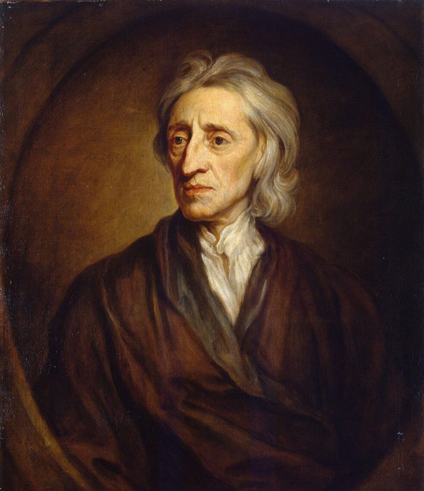
John Locke, portrait by Godfrey Kneller, 1697. Wikimedia Commons.
For most of human history, people believed kings ruled because God chose them. This idea was called the divine right of kings. No one was supposed to question it. Then, in the 1600s and 1700s, European thinkers began asking a dangerous question: What if kings get their power from the people?
For a long time, many people believed kings ruled because God chose them. This was called the divine right of kings. People were not supposed to question it. Then European thinkers asked a dangerous question: What if kings get power from the people?
An English philosopher named John Locke argued that all people are born with basic rights: life, liberty, and property. He said people create governments to protect those rights. Here was the explosive part: if a government fails to protect those rights, the people have the right to replace it. Locke called this the social contractThe idea that people give government power and can take it back..
John Locke said all people are born with basic rights: life, liberty, and property. He said people make governments to protect those rights. If a government does not protect them, people can replace it. Locke called this the social contract.
Baron de Montesquieu, French political philosopher, 18th century. Wikimedia Commons.
A French thinker named Montesquieu went further. He argued that no single person should hold all government power. He proposed three branches: one to make laws, one to carry them out, and one to judge whether they are fair. When the American founders built their government, they used Montesquieu's design almost exactly.
Montesquieu was a French thinker. He said one person should not hold all power. He wanted government split into three branches. The American founders later used this idea when they built the United States government.
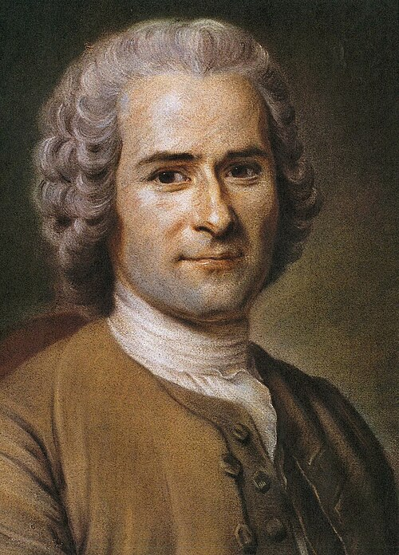
Jean-Jacques Rousseau, 18th century portrait. Wikimedia Commons.
Jean-Jacques Rousseau argued that sovereigntyThe right to rule and make final political decisions., or the right to rule, belongs to the people. He said a just government must represent the will of its citizens. Kings who ruled only for themselves were not just selfish; they were stealing power that belonged to everyone.
Jean-Jacques Rousseau said sovereignty, or the right to rule, belongs to the people. He believed a fair government should follow the will of its citizens. A king who ruled only for himself was taking power that did not belong to him.
Today, when people argue about whether a government is overstepping or failing the public, they are still using the framework these thinkers built. The debate has never stopped.
Today, people still argue about how much power government should have. They also argue about what people should do when government fails them. Those arguments come from Enlightenment ideas.
Voltaire was so obsessed with coffee that stories about him claim he drank 40 to 50 cups a day while writing. Doctors warned that it might kill him, which was a fair guess, but he lived into his eighties and kept attacking kings, priests, and bad arguments the whole time.
FAST FACTS
30KRIFLES AT BASTILLE
7PRISONERS INSIDE
6NATIONS BOLÍVAR FREED
600KENTERED RUSSIA
100KCAME BACK
✦ ✦ ✦
"Whenever the legislators endeavour to take away and destroy the property of the people, or to reduce them to slavery under arbitrary power, they put themselves into a state of war with the people, who are thereupon absolved from any farther obedience."
John Locke, Second Treatise of Government, 1689
Locke was saying that a government can lose its right to be obeyed when it attacks the rights of the people.
1. In your own words, what is Locke saying a government must never do?
2. How does this connect to the Essential Question?
✦ ✦ ✦
THREE REVOLUTIONS, ONE BIG IDEA
The ideas of the Enlightenment did not stay in books. Between 1688 and 1789, three different countries used those ideas to change their governments. Each revolution built on the last one.
Enlightenment ideas did not stay in books. Between 1688 and 1789, three countries used those ideas to change their governments. Each revolution helped inspire the next one.
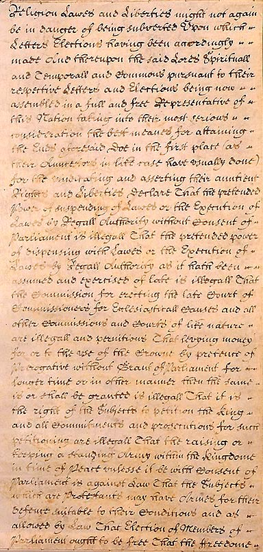
English Bill of Rights, 1689, Parliamentary Archives, London. Wikimedia Commons.
England went first. In 1688, Parliament removed King James II without a major battle in what historians call the Glorious Revolution. In 1689, England produced a Bill of Rights that limited what the king could do. England became a constitutional monarchyA monarchy where written laws limit the ruler's power.: the king still existed, but Parliament now held real power.
England went first. In 1688, Parliament removed King James II. In 1689, England made a Bill of Rights that limited the king. England became a constitutional monarchy. The king still existed, but Parliament had real power.
America went next. By the 1760s, American colonists were reading Locke and arguing that Britain had no right to tax them without their consent. In 1776, Thomas Jefferson wrote the Declaration of Independence. He used Locke's ideas: people have rights, and people may change a government that destroys those rights.
America went next. Colonists read Locke and said Britain could not tax them without their consent. In 1776, Thomas Jefferson wrote the Declaration of Independence. He said people have rights, and people can change a government that destroys those rights.
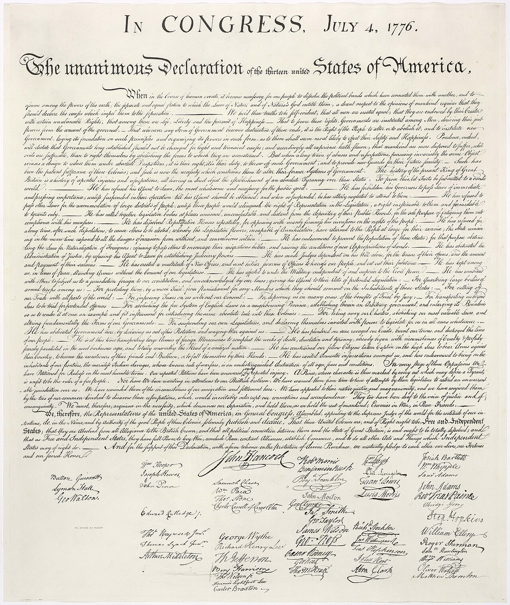
Declaration of Independence, original parchment, 1776. National Archives, Washington, D.C. Wikimedia Commons.
France exploded next. By 1789, many French citizens were hungry while the royal family lived in a palace at Versailles. When the French Revolution began, it borrowed language from the American Declaration. The French Declaration of the Rights of Man and Citizen declared that sovereignty belongs to the people, not the king.
France came next. By 1789, many French people were hungry while the royal family lived in a palace. The French Revolution borrowed ideas from America. Its Declaration of the Rights of Man said power belongs to the people, not the king.
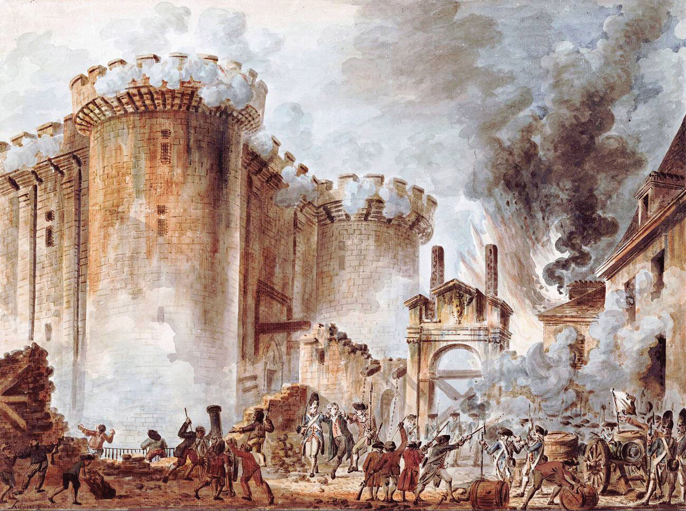
The Storming of the Bastille, Paris, July 14, 1789. Wikimedia Commons.
But the French Revolution did not stay peaceful. By 1793, the revolutionary government was executing thousands of people, including the king and queen, during the Reign of Terror. The revolution that promised liberty became a warning: removing one tyrant can create space for another kind of violence.
The French Revolution did not stay peaceful. By 1793, the revolutionary government was executing thousands of people, including the king and queen. This was called the Reign of Terror. A revolution that promised freedom also became violent.
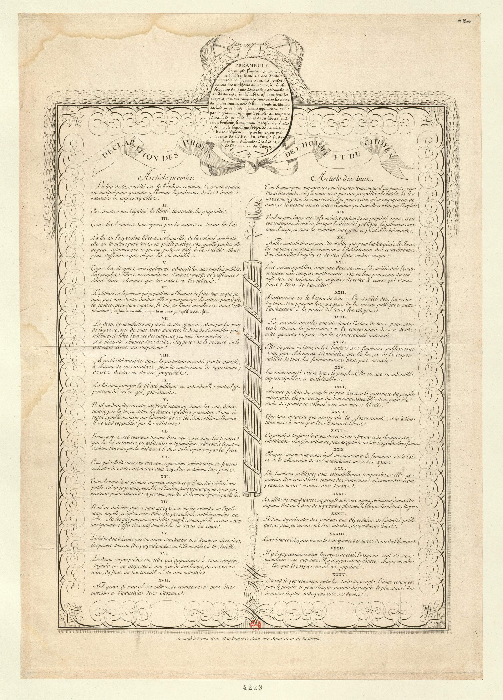
Declaration of the Rights of Man and of the Citizen, France, 1789. Wikimedia Commons.
REVOLUTION
COUNTRY AND YEAR
KEY DOCUMENT
WHAT CHANGED
Glorious Revolution
England, 1688
English Bill of Rights
The king shared power with Parliament.
American Revolution
United States, 1776
Declaration of Independence
The colonies broke from Britain and formed a republic.
French Revolution
France, 1789
Declaration of the Rights of Man
The monarchy fell, and the people claimed political power.
When people around the world later demanded free elections, written rights, and limits on rulers, they often used the language of these revolutions. The words changed from country to country, but the core question stayed the same: does government serve the people, or do the people serve the government?
Later, people around the world demanded free elections, written rights, and limits on rulers. They used ideas from these revolutions. The main question stayed the same: does government serve the people, or do people serve the government?
✦ ✦ ✦
THE FIRE SPREADS: LATIN AMERICA RISES
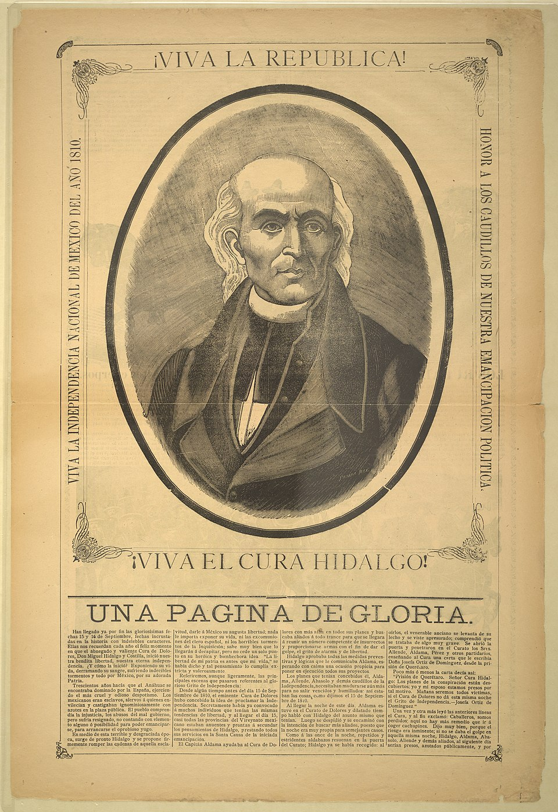
Left: Simón Bolívar, 19th century portrait. Right: Miguel Hidalgo y Costilla, Mexican independence leader. Wikimedia Commons.
By 1810, the fire of revolution had jumped the Atlantic. In Spain's Latin American colonies, people had watched the American and French revolutions for decades. They had similar complaints: colonial governments taxed them without representation, Spanish-born officials held power, and people born in the Americas were treated as second-class subjects.
By 1810, revolutionary ideas had crossed the Atlantic. People in Latin America had watched the American and French revolutions. Many had the same complaints. They were taxed without representation, and Spanish-born officials held most power.
In Mexico, a Catholic priest named Miguel Hidalgo rang his church bell before dawn on September 16, 1810. He gave a speech called the Grito de Dolores, or Cry of Dolores. He called on mestizos, Indigenous people, and poor farmers to rise up against Spanish rule. His army lost, but Mexico would win independence in 1821.
In Mexico, Miguel Hidalgo rang his church bell before dawn on September 16, 1810. His speech is called the Grito de Dolores. He called on poor farmers, Indigenous people, and mestizos to fight Spanish rule. His army lost, but Mexico became independent in 1821.
In South America, Simón Bolívar led armies across mountains and plains. Between 1810 and 1825, Bolívar helped liberate six countries. He read Locke and Montesquieu. He believed that nationalismBelief that a people with shared identity should govern themselves., or pride in a shared people and land, could defeat empire.
In South America, Simón Bolívar led armies across mountains and plains. He helped free six countries. He read Locke and Montesquieu. He believed nationalism, or pride in a shared people and land, could defeat empire.
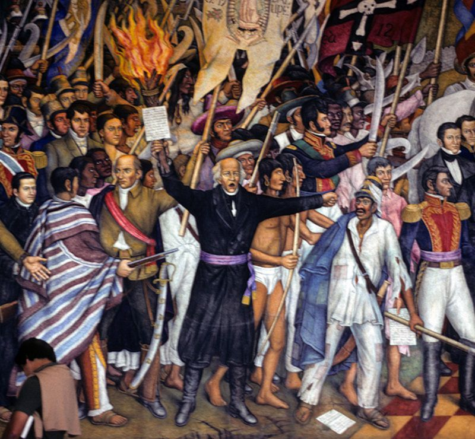
Mural depicting the Grito de Dolores, Hidalgo's 1810 call for Mexican independence. Wikimedia Commons.
Latin American independence movements faced a hard problem after victory. New countries included Spanish colonizers, Indigenous peoples, enslaved Africans, and mixed-race communities with different histories and unequal power. Building a unified nation was difficult. Many new republics soon fell into civil wars or military dictatorships.
After independence, Latin American countries faced a hard problem. Their people came from many groups with different histories and unequal power. Building one nation was difficult. Many new countries had civil wars or military dictatorships.
September 16 is still celebrated in Mexico as Independence Day. Across California, communities with deep Mexican roots mark that day every year. The revolution Hidalgo started is part of the history that shaped the border region students see today.
September 16 is still Mexico's Independence Day. Many communities in California celebrate it every year. Hidalgo's revolution helped shape the border region students see today.
ART SPOTLIGHTMural depicting Hidalgo's call for Mexican independence, 1810. Wikimedia Commons.
The Grito de Dolores did not begin in a palace or a parliament. It began before dawn with a church bell, a priest, and a crowd of people who had been told for generations to stay in their place. That is why paintings of the moment usually feel less like a speech and more like a door being kicked open.
✦ ✦ ✦
NAPOLEON: REVOLUTION'S HERO AND BETRAYAL
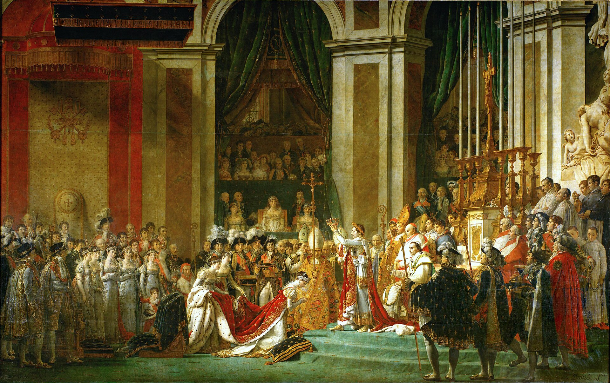
The Coronation of Napoleon, Jacques-Louis David, 1807. Louvre Museum, Paris. Wikimedia Commons.
Out of the chaos of the French Revolution came Napoleon Bonaparte. He was a military general from Corsica who seized control of France in 1799. He told the French people he was saving the revolution. He promised order, law, and national pride.
Napoleon Bonaparte rose during the chaos of the French Revolution. He was a general from Corsica. In 1799, he took control of France. He told people he would save the revolution and bring order.
In some ways, Napoleon delivered. He created the Napoleonic Code: a set of laws that promised equal treatment under the law. He spread those laws across Europe as his armies conquered country after country. For many people, Napoleon's conquests ended old feudal rules and gave them more legal freedom.
In some ways, Napoleon kept his promise. He created the Napoleonic Code. It said people should be treated equally under the law. His armies spread these laws across Europe and weakened old feudal rules.
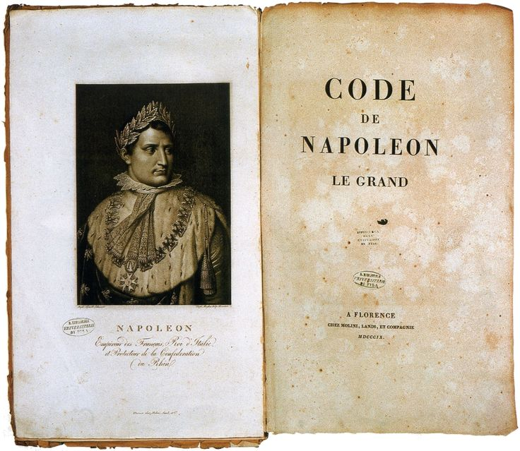
The Napoleonic Code, Code Civil des Français, 1804. Wikimedia Commons.
But Napoleon also betrayed the revolution's central promise. In 1804, inside Notre-Dame Cathedral in Paris, he placed the crown on his own head and declared himself Emperor. The man who claimed to represent the people had made himself a ruler above the people.
But Napoleon also betrayed the revolution. In 1804, he placed a crown on his own head and became Emperor. He had claimed to represent the people, but now he ruled above them.
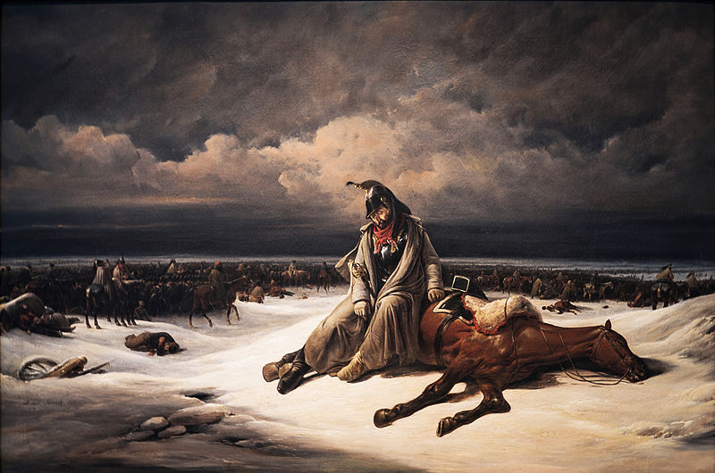
Napoleon's retreat from Russia, 1812. Wikimedia Commons.
Napoleon's wars eventually turned even his supporters against him. He invaded Russia in 1812 with about 600,000 soldiers. Fewer than 100,000 returned. He was finally defeated in 1815 at the Battle of Waterloo, and Europe's old monarchies rushed back into power.
Napoleon's wars later turned many people against him. In 1812, he invaded Russia with about 600,000 soldiers. Fewer than 100,000 came back. In 1815, he was defeated at Waterloo, and old kings returned to power.
Still, the revolutions had not failed. The idea that people had the right to govern themselves had been released into the world. Napoleon's armies carried that idea across Europe and Latin America. Even after he lost, no monarch could feel completely safe again.
Even after Napoleon lost, revolutionary ideas survived. People had heard that they could govern themselves. Napoleon's armies spread that idea across Europe and Latin America. Kings could not feel completely safe anymore.
✦ ✦ ✦
PRIMARY SOURCE MOMENT
"We hold these truths to be self-evident, that all men are created equal... Governments are instituted among Men, deriving their just powers from the consent of the governed."
Thomas Jefferson, Declaration of Independence, July 4, 1776
Jefferson turned Enlightenment ideas into a public argument for revolution.
1. According to Jefferson, where does a government get its power?
2. How does this idea help explain why people would overthrow a government?
THEN AND NOW
ONCE PEOPLE BELIEVE POWER COMES FROM THEM, RULERS CAN NEVER FULLY UNRING THAT BELL.
1776
A written claim that government power comes from the people.
TODAY
People gathering in public to challenge government power.
The first image is quiet ink on old parchment, and the second is bodies in the street; both are people insisting that government has to answer back.